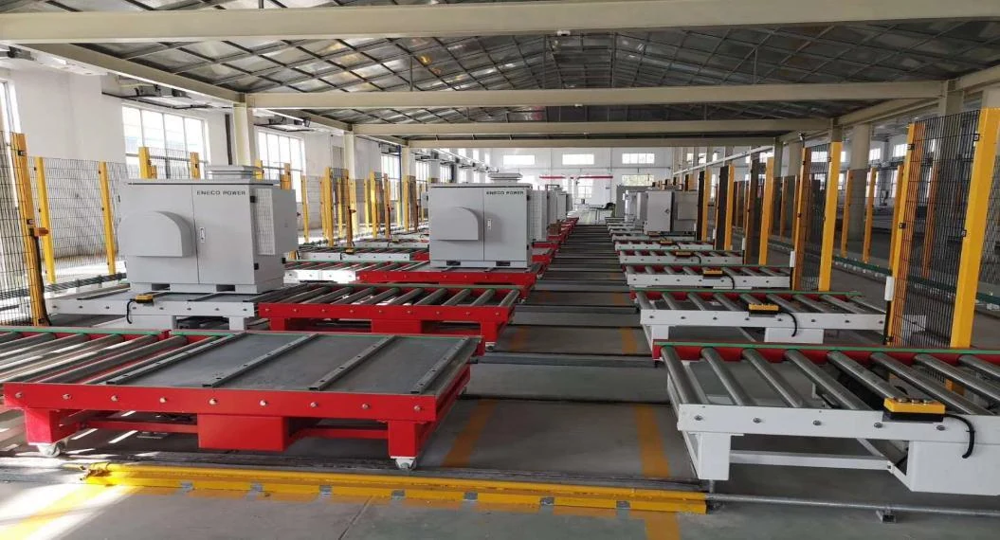

01
皮带 / 倍速链输送
适用于连续流转、装配线及工装板循环。
通过皮带、滚筒、链板、倍速链、提升机、AGV 与桁架机器人，连接生产、缓存、包装和码垛环节。
PRODUCT FAMILY
根据载荷、节拍、洁净度、空间和缓存策略选择输送及机器人形式。
适用于连续流转、装配线及工装板循环。

面向箱体、托盘、重载和耐用型应用。

35、50、500 与 1000 kg 负载系列，支持非标码垛。
SYSTEM INTEGRATION
需要共同考虑物料接口、缓存、流向、故障旁路、人员通行和维护空间。
依据物料重量、尺寸、输送速度与累计方式选型。
结合转弯、爬坡、提升、跨线和空间限制布局。
连接生产设备、包装、仓储与码垛工位。
传感、互锁、故障定位与安全防护统一设计。
FIELD SYSTEMS
重载、滚筒、链板、皮带和非标定制形式均可按现场组合。
重载与倍速链输送桁架机器人码垛LOGISTICS PROJECT
我们将据此判断输送形式、缓存策略、机器人负载与系统接口。